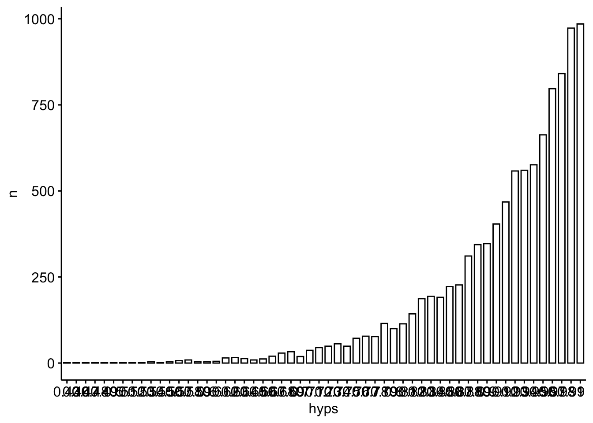

n_success <- 10
n_trials <- 10eti-hdi
paper
bayes
bayesbox
probability
1 Aufgabe
Eine Personalberatung prüft Kandidatinnen für eine Führungsposition.
Es wurden 10 Kandidatinnen geprüft. Davon haben 10 die Prüfung bestanden.
1.1 Setup
library(prada) # für bayesbox
library(tidyverse)
library(knitr) # schöne HTML-Tabellen
library(ggpubr)
library(easystats) # für hdi, etiEs werden alle Parameterwerte von 0 bis 1 untersucht, mit einer Auflösung von 1%-Schritten:
p_grid <-
seq(from = 0, to = 1, length.out = 101) |>
# auf zwei Dezimalen runden
round(2)
p_grid [1] 0.00 0.01 0.02 0.03 0.04 0.05 0.06 0.07 0.08 0.09 0.10 0.11 0.12 0.13 0.14
[16] 0.15 0.16 0.17 0.18 0.19 0.20 0.21 0.22 0.23 0.24 0.25 0.26 0.27 0.28 0.29
[31] 0.30 0.31 0.32 0.33 0.34 0.35 0.36 0.37 0.38 0.39 0.40 0.41 0.42 0.43 0.44
[46] 0.45 0.46 0.47 0.48 0.49 0.50 0.51 0.52 0.53 0.54 0.55 0.56 0.57 0.58 0.59
[61] 0.60 0.61 0.62 0.63 0.64 0.65 0.66 0.67 0.68 0.69 0.70 0.71 0.72 0.73 0.74
[76] 0.75 0.76 0.77 0.78 0.79 0.80 0.81 0.82 0.83 0.84 0.85 0.86 0.87 0.88 0.89
[91] 0.90 0.91 0.92 0.93 0.94 0.95 0.96 0.97 0.98 0.99 1.00Hier sind die Likelihoods, also die Wahrscheinlichkeiten der Daten gegeben jeweils eines Parameterwerts (einer Hypothese):
L <- dbinom(n_success, size = n_trials, prob = p_grid)
L [1] 0.000000e+00 1.000000e-20 1.024000e-17 5.904900e-16 1.048576e-14
[6] 9.765625e-14 6.046618e-13 2.824752e-12 1.073742e-11 3.486784e-11
[11] 1.000000e-10 2.593742e-10 6.191736e-10 1.378585e-09 2.892547e-09
[16] 5.766504e-09 1.099512e-08 2.015994e-08 3.570467e-08 6.131066e-08
[21] 1.024000e-07 1.667988e-07 2.655992e-07 4.142651e-07 6.340338e-07
[26] 9.536743e-07 1.411671e-06 2.058911e-06 2.961968e-06 4.207072e-06
[31] 5.904900e-06 8.196283e-06 1.125900e-05 1.531579e-05 2.064378e-05
[36] 2.758547e-05 3.656158e-05 4.808584e-05 6.278212e-05 8.140406e-05
[41] 1.048576e-04 1.342266e-04 1.708020e-04 2.161148e-04 2.719736e-04
[46] 3.405063e-04 4.242075e-04 5.259913e-04 6.492506e-04 7.979227e-04
[51] 9.765625e-04 1.190424e-03 1.445551e-03 1.748875e-03 2.108325e-03
[56] 2.532952e-03 3.033055e-03 3.620333e-03 4.308042e-03 5.111168e-03
[61] 6.046618e-03 7.133429e-03 8.392994e-03 9.849303e-03 1.152922e-02
[66] 1.346274e-02 1.568337e-02 1.822838e-02 2.113923e-02 2.446194e-02
[71] 2.824752e-02 3.255244e-02 3.743906e-02 4.297626e-02 4.923990e-02
[76] 5.631351e-02 6.428889e-02 7.326680e-02 8.335776e-02 9.468276e-02
[81] 1.073742e-01 1.215767e-01 1.374480e-01 1.551604e-01 1.749012e-01
[86] 1.968744e-01 2.213016e-01 2.484234e-01 2.785010e-01 3.118172e-01
[91] 3.486784e-01 3.894161e-01 4.343885e-01 4.839823e-01 5.386151e-01
[96] 5.987369e-01 6.648326e-01 7.374241e-01 8.170728e-01 9.043821e-01
[101] 1.000000e+00Und hier ist die Bayesbox:
bb <- bayesbox(hyps = p_grid, priors = 1, liks = L) # aus "prada"
bb |>
kable(digits = 2)| hyps | priors | liks | post_unstand | post_std |
|---|---|---|---|---|
| 0.00 | 1 | 0.00 | 0.00 | 0.00 |
| 0.01 | 1 | 0.00 | 0.00 | 0.00 |
| 0.02 | 1 | 0.00 | 0.00 | 0.00 |
| 0.03 | 1 | 0.00 | 0.00 | 0.00 |
| 0.04 | 1 | 0.00 | 0.00 | 0.00 |
| 0.05 | 1 | 0.00 | 0.00 | 0.00 |
| 0.06 | 1 | 0.00 | 0.00 | 0.00 |
| 0.07 | 1 | 0.00 | 0.00 | 0.00 |
| 0.08 | 1 | 0.00 | 0.00 | 0.00 |
| 0.09 | 1 | 0.00 | 0.00 | 0.00 |
| 0.10 | 1 | 0.00 | 0.00 | 0.00 |
| 0.11 | 1 | 0.00 | 0.00 | 0.00 |
| 0.12 | 1 | 0.00 | 0.00 | 0.00 |
| 0.13 | 1 | 0.00 | 0.00 | 0.00 |
| 0.14 | 1 | 0.00 | 0.00 | 0.00 |
| 0.15 | 1 | 0.00 | 0.00 | 0.00 |
| 0.16 | 1 | 0.00 | 0.00 | 0.00 |
| 0.17 | 1 | 0.00 | 0.00 | 0.00 |
| 0.18 | 1 | 0.00 | 0.00 | 0.00 |
| 0.19 | 1 | 0.00 | 0.00 | 0.00 |
| 0.20 | 1 | 0.00 | 0.00 | 0.00 |
| 0.21 | 1 | 0.00 | 0.00 | 0.00 |
| 0.22 | 1 | 0.00 | 0.00 | 0.00 |
| 0.23 | 1 | 0.00 | 0.00 | 0.00 |
| 0.24 | 1 | 0.00 | 0.00 | 0.00 |
| 0.25 | 1 | 0.00 | 0.00 | 0.00 |
| 0.26 | 1 | 0.00 | 0.00 | 0.00 |
| 0.27 | 1 | 0.00 | 0.00 | 0.00 |
| 0.28 | 1 | 0.00 | 0.00 | 0.00 |
| 0.29 | 1 | 0.00 | 0.00 | 0.00 |
| 0.30 | 1 | 0.00 | 0.00 | 0.00 |
| 0.31 | 1 | 0.00 | 0.00 | 0.00 |
| 0.32 | 1 | 0.00 | 0.00 | 0.00 |
| 0.33 | 1 | 0.00 | 0.00 | 0.00 |
| 0.34 | 1 | 0.00 | 0.00 | 0.00 |
| 0.35 | 1 | 0.00 | 0.00 | 0.00 |
| 0.36 | 1 | 0.00 | 0.00 | 0.00 |
| 0.37 | 1 | 0.00 | 0.00 | 0.00 |
| 0.38 | 1 | 0.00 | 0.00 | 0.00 |
| 0.39 | 1 | 0.00 | 0.00 | 0.00 |
| 0.40 | 1 | 0.00 | 0.00 | 0.00 |
| 0.41 | 1 | 0.00 | 0.00 | 0.00 |
| 0.42 | 1 | 0.00 | 0.00 | 0.00 |
| 0.43 | 1 | 0.00 | 0.00 | 0.00 |
| 0.44 | 1 | 0.00 | 0.00 | 0.00 |
| 0.45 | 1 | 0.00 | 0.00 | 0.00 |
| 0.46 | 1 | 0.00 | 0.00 | 0.00 |
| 0.47 | 1 | 0.00 | 0.00 | 0.00 |
| 0.48 | 1 | 0.00 | 0.00 | 0.00 |
| 0.49 | 1 | 0.00 | 0.00 | 0.00 |
| 0.50 | 1 | 0.00 | 0.00 | 0.00 |
| 0.51 | 1 | 0.00 | 0.00 | 0.00 |
| 0.52 | 1 | 0.00 | 0.00 | 0.00 |
| 0.53 | 1 | 0.00 | 0.00 | 0.00 |
| 0.54 | 1 | 0.00 | 0.00 | 0.00 |
| 0.55 | 1 | 0.00 | 0.00 | 0.00 |
| 0.56 | 1 | 0.00 | 0.00 | 0.00 |
| 0.57 | 1 | 0.00 | 0.00 | 0.00 |
| 0.58 | 1 | 0.00 | 0.00 | 0.00 |
| 0.59 | 1 | 0.01 | 0.01 | 0.00 |
| 0.60 | 1 | 0.01 | 0.01 | 0.00 |
| 0.61 | 1 | 0.01 | 0.01 | 0.00 |
| 0.62 | 1 | 0.01 | 0.01 | 0.00 |
| 0.63 | 1 | 0.01 | 0.01 | 0.00 |
| 0.64 | 1 | 0.01 | 0.01 | 0.00 |
| 0.65 | 1 | 0.01 | 0.01 | 0.00 |
| 0.66 | 1 | 0.02 | 0.02 | 0.00 |
| 0.67 | 1 | 0.02 | 0.02 | 0.00 |
| 0.68 | 1 | 0.02 | 0.02 | 0.00 |
| 0.69 | 1 | 0.02 | 0.02 | 0.00 |
| 0.70 | 1 | 0.03 | 0.03 | 0.00 |
| 0.71 | 1 | 0.03 | 0.03 | 0.00 |
| 0.72 | 1 | 0.04 | 0.04 | 0.00 |
| 0.73 | 1 | 0.04 | 0.04 | 0.00 |
| 0.74 | 1 | 0.05 | 0.05 | 0.01 |
| 0.75 | 1 | 0.06 | 0.06 | 0.01 |
| 0.76 | 1 | 0.06 | 0.06 | 0.01 |
| 0.77 | 1 | 0.07 | 0.07 | 0.01 |
| 0.78 | 1 | 0.08 | 0.08 | 0.01 |
| 0.79 | 1 | 0.09 | 0.09 | 0.01 |
| 0.80 | 1 | 0.11 | 0.11 | 0.01 |
| 0.81 | 1 | 0.12 | 0.12 | 0.01 |
| 0.82 | 1 | 0.14 | 0.14 | 0.01 |
| 0.83 | 1 | 0.16 | 0.16 | 0.02 |
| 0.84 | 1 | 0.17 | 0.17 | 0.02 |
| 0.85 | 1 | 0.20 | 0.20 | 0.02 |
| 0.86 | 1 | 0.22 | 0.22 | 0.02 |
| 0.87 | 1 | 0.25 | 0.25 | 0.03 |
| 0.88 | 1 | 0.28 | 0.28 | 0.03 |
| 0.89 | 1 | 0.31 | 0.31 | 0.03 |
| 0.90 | 1 | 0.35 | 0.35 | 0.04 |
| 0.91 | 1 | 0.39 | 0.39 | 0.04 |
| 0.92 | 1 | 0.43 | 0.43 | 0.05 |
| 0.93 | 1 | 0.48 | 0.48 | 0.05 |
| 0.94 | 1 | 0.54 | 0.54 | 0.06 |
| 0.95 | 1 | 0.60 | 0.60 | 0.06 |
| 0.96 | 1 | 0.66 | 0.66 | 0.07 |
| 0.97 | 1 | 0.74 | 0.74 | 0.08 |
| 0.98 | 1 | 0.82 | 0.82 | 0.09 |
| 0.99 | 1 | 0.90 | 0.90 | 0.09 |
| 1.00 | 1 | 1.00 | 1.00 | 0.10 |
Und hier ist die Post-Verteilung:
ggline(bb, x = "hyps", y = "post_std") Daraus ziehen wir Stichproben:
post_samples <-
bb |>
slice_sample(n = 10000,
weight_by = post_std,
replace = TRUE)Und hier ist die Post-Verteilung auf Basis der Stichproben visualisiert:
post_samples |>
count(hyps) |>
ggbarplot(x = "hyps", y = "n")
In diesem Fall ist die Posterior-Verteilung schief (rechtssteil), wie man im Diagramm sieht.
Aufgabe Würden in diesem Fall eine ETI- bzw. ein HDI zum gleichen Ergebnis kommen? Welches von beiden Intervallen würden Sie vorziehen? Begründen Sie.
Tipp: Nutzen Sie das Diagramm der Post-Verteilung zur Lösung der Aufgabe.
2 Lösung
In diesem Fall können die ETI und das HDI nicht zum gleichen Ergebnis kommen, da die Posterior-Verteilung nicht symmetrisch ist, sondern schief.
post_samples |>
select(hyps) |>
mutate(hyps = as.numeric(hyps)) |>
eti(ci = .5)| Parameter | CI | CI_low | CI_high |
|---|---|---|---|
| hyps | 0.5 | 0.89 | 0.98 |
post_samples |>
select(hyps) |>
mutate(hyps = as.numeric(hyps)) |>
hdi(ci = .5)| Parameter | CI | CI_low | CI_high |
|---|---|---|---|
| hyps | 0.5 | 0.94 | 1 |
In dem Maße, wie eine Verteilung schief ist (nicht symmetrisch), weicht das ETI vom HDI ab.
Da bei schiefen Verteilungen der Bereich mit der höchsten Wahrscheinlichkeit (Dichte) nicht im ETI liegen kann, würde ich in diesem Fall das HDI vorziehen.